<!DOCTYPE html>
<html lang="en">

<head>
  <meta charset="utf-8" />
  <meta name="viewport" content="width=device-width, initial-scale=1.0, maximum-scale=1.0, user-scalable=no" />

  <title>Application Security</title>
  <link rel="shortcut icon" href="./../../../assets/favicon.ico" />
  <link rel="stylesheet" href="./../../../dist/reset.css" />
  <link rel="stylesheet" href="./../../../dist/reveal.css" />
  <link rel="stylesheet" href="./../../../assets/styles/PBA-theme.css" id="theme" />
  <link rel="stylesheet" href="./../../../css/highlight/shades-of-purple.css" />

  <link rel="stylesheet" href="./../../.././assets/styles/custom-classes.css" />

</head>

<body class="site">
  <header class="site-header">
    <!-- This logo is a link only on the watching server, not the production build -->
    <a href="">
      
    </a>
  </header>
  <main class="reveal">
    <article class="slides">
      <section  data-markdown><script type="text/template">

Security is a matter of balance, not too much, not less. Only **adequate security**.


</script></section><section  data-markdown><script type="text/template">
Security is about your **residual risks**, not what you have prevented.

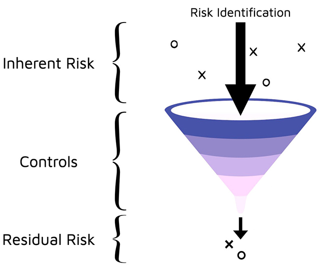
</script></section><section  data-markdown><script type="text/template">
# Application Security
</script></section><section  data-markdown><script type="text/template">
## Index

<pba-flex center>

1. ### Securing SDLC
   - The Big Picture of AppSec
   - Components of AppSec
   - Shifting Left
2. ### Known Attack Surfaces & Vectors
   - Known Rust Vulnerabilities
   - Known Substrate Vulnerabilities
   - Known ink! Vulnerabilities

</pba-flex>
</script></section><section  data-markdown><script type="text/template">
# 1. Securing SDLC
</script></section><section  data-markdown><script type="text/template">
## The Big Picture of AppSec

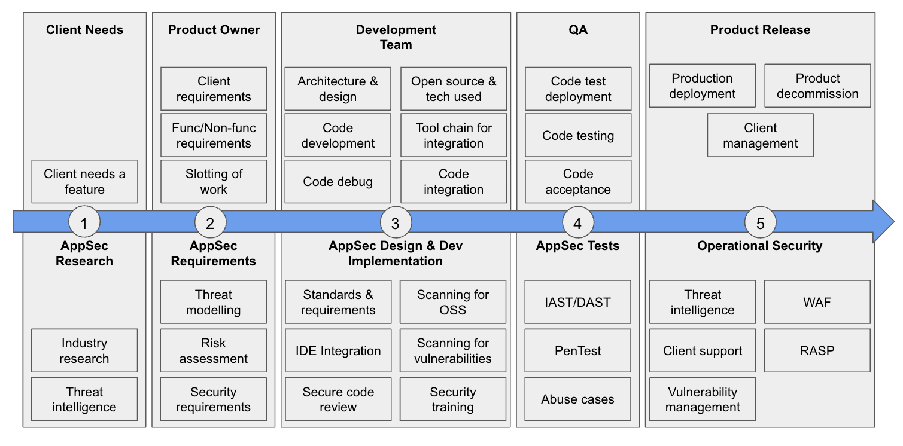

We will visit this picture multiple times.
</script></section><section  data-markdown><script type="text/template">
## Security needs to be enforced through the use of controls. Controls must be:

<pba-flex center>

- Designed
- Developed
- Implemented
- Configured
- Operated
- Monitored
- Improved

</pba-flex>
</script></section><section  data-markdown><script type="text/template">
## How do we decide on Controls?

The likelihood of a threat exploiting a vulnerability and thereby causing damage to an asset.

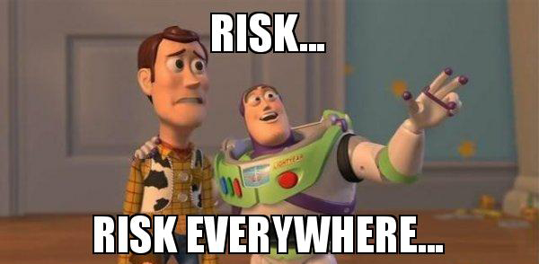
</script></section><section  data-markdown><script type="text/template">
## In case you have yet to hear of the CIA Triad

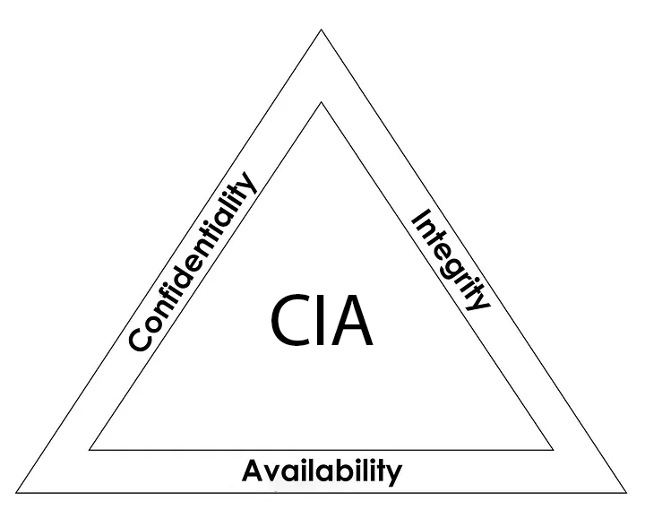
</script></section><section  data-markdown><script type="text/template">
## FIXME title

- **Confidentiality:** Ensure that only authorized people can access their authorized entities.
- **Integrity:** Ensure that only authorized changes are made by authorized entities.
- **Availability:** Ensure that the data will always be available when it is required.
</script></section><section  data-markdown><script type="text/template">
## The AAA + NR

(The 4 "F\*ck")

- **Authentication:** Who the f8ck you are
- **Authorization:** What the f8ck you allowed to do
- **Accountability:** Who the f8ck is responsible
- **Non-Repudiation:** Can't f8cking deny

<!-- FIXME I like the sentiment, but in this content let's be a bit more formal - use some more PC language 🙏 -->
</script></section><section  data-markdown><script type="text/template">
# A brief look at design principles
</script></section><section  data-markdown><script type="text/template">
## Good enough security

Don’t spend $10.000 on a safe to protect a $20 bill


</script></section><section  data-markdown><script type="text/template">
## Least Privilege

Don't give your safe's key to everybody, give only what they need

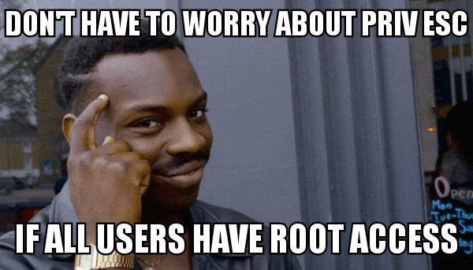
</script></section><section  data-markdown><script type="text/template">
## Separation of Duties

Don't give the power of creating invoices, approving invoices and sending money to one person


</script></section><section  data-markdown><script type="text/template">
## Defense in Depth

A castle has a moat, thick walls, restricted access points, high points for defense, multiple checkpoints inside etc.; what do you have?


</script></section><section  data-markdown><script type="text/template">
## Fail-Safe

Any function that is not specifically authorized is denied by default


</script></section><section  data-markdown><script type="text/template">
## Economy of Mechanism

Security is already a complex topic, don’t make it more complicated (KISS)

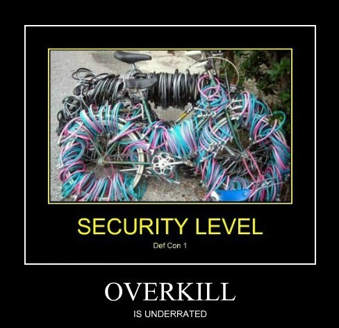
</script></section><section  data-markdown><script type="text/template">
## Complete Mediation

Every critical operation must have verification at every time.


</script></section><section  data-markdown><script type="text/template">
## Open Design

Don't even try: Security over obscurity


</script></section><section  data-markdown><script type="text/template">
## Least Common Mechanism

Is like the rarest key that opens specific locks, not used often but still can cause significant damage when it does.


</script></section><section  data-markdown><script type="text/template">
## Psychological Acceptability

There is no point if users cannot use your security controls seamlessly.

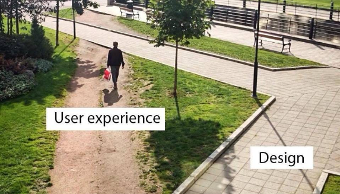
</script></section><section  data-markdown><script type="text/template">
## Weakest Link

A chain is only as strong as its weakest link

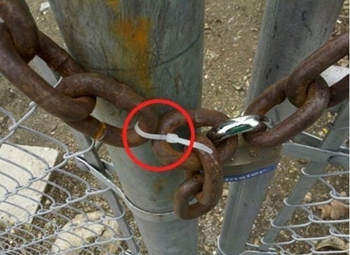
</script></section><section  data-markdown><script type="text/template">
## Leverage Existing Components

Fewer components, fewer attack surface, but more;


</script></section><section  data-markdown><script type="text/template">
## Single Point of Failure

If SPoF fails, means the entire system fails


</script></section><section  data-markdown><script type="text/template">
# Securing a software is very simple(!)
</script></section><section  data-markdown><script type="text/template">
<pba-flex center>

- **Identify Attack Surfaces**
  What potential surfaces do you have?
- **Identify Attack Vectors**
  What potential vectors do you have?
- **Allocate Security Controls**
  Risk based approach + Security Controls

</pba-flex>
</script></section><section  data-markdown><script type="text/template">
# Security Controls are easy(!)
</script></section><section  data-markdown><script type="text/template">
## Security controls can be;

- **Directive (Safeguard \[Proactive\] - means before the incident)** \* The policy is an example. This is what you are allowed to do, or you are not allowed to do


</script></section><section  data-markdown><script type="text/template">
## Security controls can be;

- **Deterrent (Safeguard \[Proactive\] - means before the incident)**
  - Discourage somebody from doing something wrong. For ex. watching people with a security camera. Once they know they are under observation, they will hesitate.
</script></section><section  data-markdown><script type="text/template">
Deterrent


</script></section><section  data-markdown><script type="text/template">
## Security controls can be;

- **Preventive (Safeguard \[Proactive\] - means before the incident)** \* Try to stop a person from doing something wrong. For ex. Password is a preventive control.

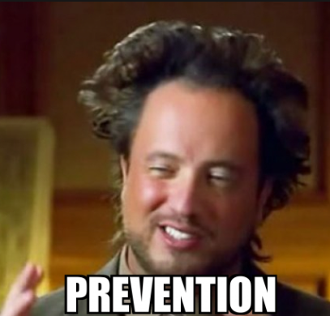
</script></section><section  data-markdown><script type="text/template">
## Security controls can be;

- **Detective (Countermeasures \[Reactive\] - means in the incident moment or afterwards)** \* Trying to detect an incident. For ex. logs


</script></section><section  data-markdown><script type="text/template">
## Security controls can be;

- **Corrective (Countermeasures \[Reactive\] - means afterwards)** \* Tries to reestablish control after an incident and correct the immediate problem.


</script></section><section  data-markdown><script type="text/template">
## Security controls can be;

- **Restoration/Recovery (Countermeasures \[Reactive\] - means afterwards)** \* Try to rebuild and get back to normal.

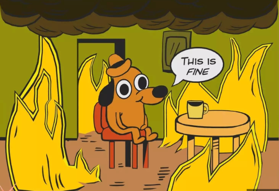
</script></section><section  data-markdown><script type="text/template">
## Implementation is tough, sorry

<pba-flex center>

- Secure coding practices
- Separation of environments
- Proper testing
- Validation and discovery
- Mitigation
- Root cause analysis
- Documentation in every steps

</pba-flex>
</script></section><section  data-markdown><script type="text/template">
## Components of AppSec
</script></section><section  data-markdown><script type="text/template">
<pba-flex center>

- **Threat Modelling:** Manuel or Automated
- **Security Testing:** SAST, DAST, IAST, SCA, RASP
- **Vuln. Collection & Prioritization:** Jira, Asana

</pba-flex>
</script></section><section  data-markdown><script type="text/template">
There will be blood (**risk**), you need to manage the blood. But how?


</script></section><section  data-markdown><script type="text/template">
## Risk Management but how?

- **Risk Avoidance:** This approach mitigates risk by refraining from activities that could negatively impact the organization.
</script></section><section  data-markdown><script type="text/template">
## Risk Management but how?

- **Risk Reduction:** This risk management method aims to limit the losses rather than completely eradicate them. It accepts the risk but works to contain potential losses and prevent their spread.
</script></section><section  data-markdown><script type="text/template">
## Risk Management but how?

- **Risk Sharing:** In this case, the risk of potential loss is distributed among a group instead of being borne by an individual.
</script></section><section  data-markdown><script type="text/template">
## Risk Management but how?

- **Transferring Risk:** This involves contractually shifting risk to a third party. For instance, insuring against property damage or injury transfers the associated risks from the property owner to the insurance company.
</script></section><section  data-markdown><script type="text/template">
## Risk Management but how?

- **Risk Acceptance and Retention:** After applying risk sharing, risk transfer, and risk reduction measures, some risk inevitably remains, as it's virtually impossible to eliminate all risks. This remaining risk is known as residual risk.
</script></section><section  data-markdown><script type="text/template">
# Vulnerability Disclosure Program vs Bug Bounty
</script></section><section  data-markdown><script type="text/template">
## Shifting Left vs Right

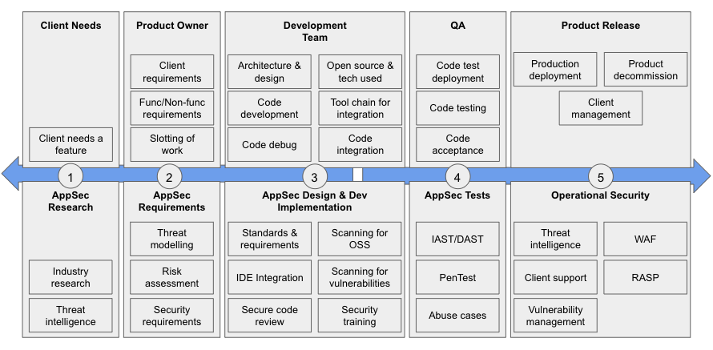
</script></section><section  data-markdown><script type="text/template">
## Known Attack Surfaces & Vectors
</script></section><section  data-markdown><script type="text/template">
## Known Rust Vulnerabilities

<pba-flex center>

1. Rust-specific issues
1. Unsafe code
1. Cryptographic errors

</pba-flex>
</script></section><section  data-markdown><script type="text/template">
## Known Substrate Vulnerabilities

<pba-flex center>

1. Insufficient testing
1. Centralization vulnerabilities
1. Pallet-specific vulnerabilities

</pba-flex>
</script></section><section  data-markdown><script type="text/template">
## Known ink! Vulnerabilities

<pba-flex center>

1. Incorrect access control
1. Denial-of-Service (DoS)
1. Timestamp dependence
1. Outdated version

</pba-flex>
</script></section><section  data-markdown><script type="text/template">
**Summary:** Do the damn input validation, good to go!


</script></section><section  data-markdown><script type="text/template">
**Question:** How would you defend a castle if there is no castle to defend?
</script></section><section  data-markdown><script type="text/template">
Don't forget to check lecture [materials](./appsec-lecture-material.md)
</script></section>
    </article>
  </main>

  <script src="./../../../dist/reveal.js"></script>

  <script src="./../../../plugin/markdown/markdown.js"></script>
  <script src="./../../../plugin/highlight/highlight.js"></script>
  <script src="./../../../plugin/zoom/zoom.js"></script>
  <script src="./../../../plugin/notes/notes.js"></script>
  <script src="./../../../plugin/math/math.js"></script>

  <script src="./../../../assets/plugin/mermaid.js"></script>
  <script src="./../../../assets/plugin/mermaid-theme.js"></script>

  <script src="./../../../assets/plugin/chart/chart.js"></script>
  <script src="./../../../assets/plugin/chart/chart.min.js"></script>

  <script src="./../../../assets/plugin/tailwindcss.min.js"></script>

  <script>
    function extend() {
      var target = {};
      for (var i = 0; i < arguments.length; i++) {
        var source = arguments[i];
        for (var key in source) {
          if (source.hasOwnProperty(key)) {
            target[key] = source[key];
          }
        }
      }
      return target;
    }

    // default options to init reveal.js
    var defaultOptions = {
      controls: true,
      progress: true,
      history: true,
      center: true,
      transition: 'default', // none/fade/slide/convex/concave/zoom
      slideNumber: true,
      mermaid: {
        startOnLoad: false,
        logLevel: 3,
        theme: 'base',
        themeVariables: {
          primaryColor: purple,
          primaryTextColor: white,
          primaryBorderColor: pink,
          lineColor: pink,
          secondaryColor: lightPurple,
          tertiaryColor: lightPurple,
        },
      },
      chart: {
        defaults: {
          color: 'lightgray', // color of labels
          scale: {
            beginAtZero: true,
            ticks: { stepSize: 1 },
            grid: { color: "lightgray" }, // color of grid lines
          },
        },
        line: { borderColor: ["#ccc", "#E6007A", "#6D3AEE"], "borderDash": [[5, 10], [0, 0]] },
        bar: { backgroundColor: ["#ccc", "#E6007A", "#6D3AEE"] },
      },
      plugins: [
        RevealMarkdown,
        RevealHighlight,
        RevealZoom,
        RevealNotes,
        RevealMath,
        RevealMermaid,
        RevealChart
      ]
    };

    // options from URL query string
    var queryOptions = Reveal().getQueryHash() || {};

    var options = extend(defaultOptions, {"width":1400,"height":900,"margin":0,"minScale":0.2,"maxScale":2,"transition":"none","controls":true,"progress":true,"center":true,"slideNumber":true,"backgroundTransition":"fade"}, queryOptions);
  </script>


  <script>
    Reveal.initialize(options);
  </script>
</body>

</html>